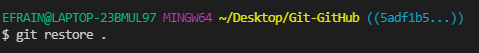

El comando "restaurar" ayuda a eliminar la etapa o incluso descartar los cambios locales no confirmados.Por un lado, el comando se puede utilizar para deshacer los efectos de los git addcambios que hayas agregado previamente al Área de preparación y deshacer el escenario. Por otro lado, el restorecomando también se puede usar para descartar cambios locales en un archivo, restaurando así su último estado comprometido.
